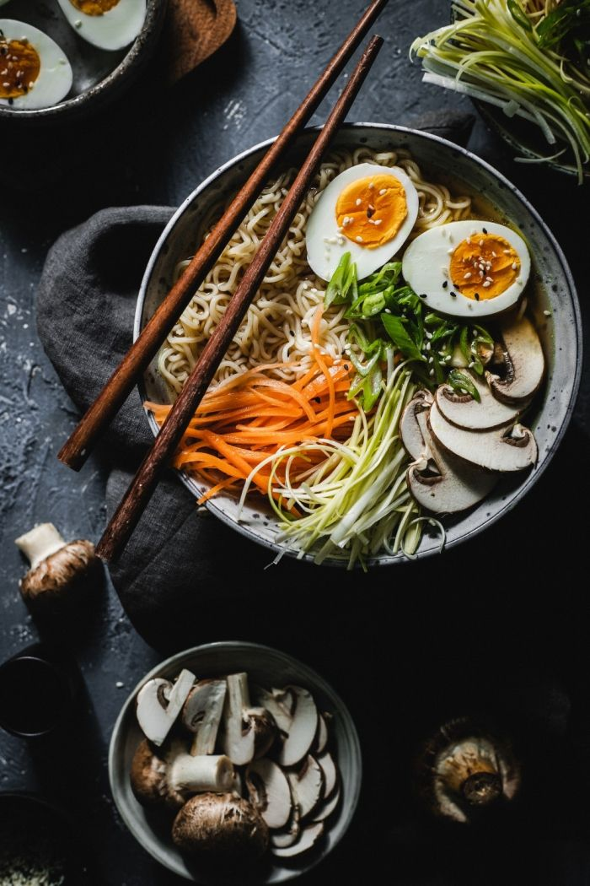

Ramen Noodle Soup

Description
Ramen noodle soup is a popular Japanese dish that's made with noodles, vegetables, and a soy sauce.
This simple recipe will make a delicious and satisfying meal for your family or friends.
Ingredients
- 3 ½ cups vegetable broth
- 1 (3.5 ounce) package ramen noodles with dried vegetables
- 2 teaspoons soy sauce
- ½ teaspoon chili oil
- ½ teaspoon minced fresh ginger root
- 1 teaspoon sesame oil
- 2 green onions, sliced
Steps
- In a large pot, heat the vegetable broth, soy sauce, chili oil, and ginger root over medium heat. Stir in the sesame oil and cook for about 3-4 minutes, until the vegetables are tender.
- Add the ramen noodles to the pot and cook for another 5-7 minutes, until they are al done.
- Serve the ramen noodle soup with the green onions and enjoy!
Return to the Top
Return to Home